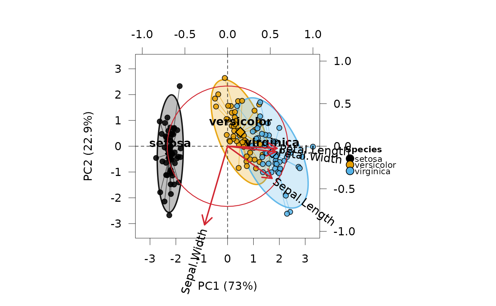

Creates customisable biplots for Principal Component Analysis (PCA) using
only base R graphics. Supports stats::prcomp(), stats::princomp(),
vegan::rda() (unconstrained PCA), survey::svyprcomp(), FactoMineR::PCA(),
ade4::dudi.pca(), and psych::principal() objects, as well as custom score
and loading matrices.
Usage
bb_biplot(x, ...)
# Default S3 method
bb_biplot(
x,
y,
xsd,
pc = c(1, 2),
limx,
grid = TRUE,
col,
pch = 21,
cex.pt = 1,
alpha = 0.85,
xlab,
ylab,
axes = TRUE,
cex.axis = 1,
cex = 1,
group,
group2,
group3,
labd,
lab.args = list(),
variables = TRUE,
circle.eq = FALSE,
var.args = list(),
chull = FALSE,
ellipse = FALSE,
centroids = FALSE,
spider = FALSE,
ellipse.args = list(),
legend = FALSE,
leg.args = list(),
f1,
f2,
...
)
# S3 method for class 'prcomp'
bb_biplot(
x,
pc = c(1, 2),
scale = 1,
varimax.rotate = FALSE,
varimax.args = list(),
pc.biplot = FALSE,
...
)
# S3 method for class 'princomp'
bb_biplot(
x,
pc = c(1, 2),
scale = 1,
varimax.rotate = FALSE,
varimax.args = list(),
pc.biplot = FALSE,
...
)
# S3 method for class 'rda'
bb_biplot(
x,
pc = c(1, 2),
scale = 1,
varimax.rotate = FALSE,
varimax.args = list(),
pc.biplot = FALSE,
...
)
# S3 method for class 'svyprcomp'
bb_biplot(
x,
pc = c(1, 2),
scale = 1,
varimax.rotate = FALSE,
varimax.args = list(),
pc.biplot = FALSE,
group3,
...
)
# S3 method for class 'PCA'
bb_biplot(
x,
pc = c(1, 2),
scale = 1,
varimax.rotate = FALSE,
varimax.args = list(),
pc.biplot = FALSE,
...
)
# S3 method for class 'pca'
bb_biplot(
x,
pc = c(1, 2),
scale = 1,
varimax.rotate = FALSE,
varimax.args = list(),
pc.biplot = FALSE,
...
)
# S3 method for class 'principal'
bb_biplot(x, pc = c(1, 2), ...)Arguments
- x
Observations matrix with at least 2 columns, or a supported PCA object (
"prcomp","princomp","rda","svyprcomp","PCA","pca", or"principal").- ...
Additional graphical arguments passed to
graphics::plot(), pluschull.args(alias forellipse.args) and deprecated v1.x arguments.- y
Variables (loadings/rotation) matrix with at least 2 columns. Automatically determined for supported PCA objects.
- xsd
Optional numeric vector of standard deviations for the variables, used for automatic axis variance labels. Automatically determined for supported PCA objects.
- pc
Integer vector of length 2 giving the principal components to plot (default
c(1, 2)).- limx
Optional numeric multiplier to expand or shrink the automatic
xlimandylimvalues (e.g.,1.5).- grid
Logical; draw dashed reference lines through the origin (default
TRUE).- col
Optional vector of colours for observations or groups, or a single palette name from
grDevices::palette.pals()(e.g."Okabe-Ito") orgrDevices::hcl.pals()(e.g."Viridis","Dark 3"). A palette is generated automatically if omitted.- pch
Plotting symbol(s) for observations (default
21).- cex.pt
Numeric size multiplier for observation points (default
1).- alpha
Numeric point opacity in
[0, 1](default0.85).- xlab
Optional x-axis label overriding the automatic label.
- ylab
Optional y-axis label overriding the automatic label.
- axes
Logical; whether to draw axes (default
TRUE).- cex.axis
Numeric size multiplier for axes and axis labels (default
1).- cex
Global size multiplier applied to plot elements (default
1).- group
Optional factor (or vector coercible to factor) of length
nrow(x)grouping observations by colour (and symbol if multiplepchvalues are supplied withoutgroup2).- group2
Optional second grouping factor controlling point
pchsymbols. Requiresgroup.- group3
Optional third grouping factor controlling point size. Requires
group. Thegroup3legend is condensed to show minimum, middle, and maximum symbol sizes. Forsurvey::svyprcomp()objects, can also be set to"scaled"to scale point sizes by the survey weights (sqrt(w / max(w)), which does not requiregroupand displays a condensed min/median/max weight legend when legends are enabled).- labd
Optional character vector of observation labels. Use
NAto omit individual labels.- lab.args
Named list of label styling options:
col: Colour for observation labels (default"black").cex: Numeric size for observation labels (default0.5).font: Font face for observation labels (1= normal,2= bold,3= italic,4= bold italic; default1).rotate: Logical; rotate observation and variable labels radially (defaultFALSE).ran.adj: Logical; randomly adjust label alignment whenrotate = TRUE(defaultFALSE).valign: Vertical alignment for rotated variable labels (0,0.5, or1; default0.5).pos: Placement for unrotated observation labels:"auto"(deterministic radial quadrant, default),"random", or integer position(s) in1:4.
- variables
Logical; whether to plot variable arrows (default
TRUE).- circle.eq
Logical; draw the circle of equilibrium contribution when
scale = 0(defaultFALSE).- var.args
Named list of variable-arrow styling options:
vname: Optional vector of variable names (defaults torownames(y)).which: Optional character vector of variable names, integer indices, or"circle.eq"(requirescircle.eq = TRUEandscale = 0) to subset plotted variables.expand: Numeric multiplier for variable arrow lengths (default1).lab.offset: Numeric multiplier nudging variable labels past arrow tips (default1.05).arrow.len: Length of arrow heads in inches;0suppresses heads (default0.15).lwd: Line width for variable arrows (default2).col: Colour for variable arrows and circle of equilibrium (default"#d12631").col.lab: Colour for variable labels (default"black").cex.lab: Numeric size for variable labels (default1).font.lab: Font face for variable labels (default1).axes: Logical; whether to draw top and right variable axes (defaultTRUE).
- chull
Logical; draw convex hulls around
groupclusters (defaultFALSE).- ellipse
Logical; draw ellipses around
groupclusters (defaultFALSE).- centroids
Controls group centroid display when
groupis supplied (defaultFALSE). AcceptsFALSE,TRUE(diamond markers + labels),"points"(markers only), or"labels"(labels only).- spider
Logical; draw segments connecting each observation to its
groupcentroid (defaultFALSE).- ellipse.args
Named list of hull and ellipse styling options (also accepted via the alias
chull.args):method: Ellipse method:"cov"(bivariate normal confidence ellipse, default) or"t"(small-sample F / Hotelling's T-squared ellipse).level: Confidence level in(0, 1)for ellipses (default0.95).autolim: Logical; automatically expand plot limits if ellipses exceed them (defaultTRUE).nofill: Logical; ifTRUE, draw only outlines for ellipses and convex hulls (defaultFALSE).alpha: Fill opacity in[0, 1]for ellipses and convex hulls (default0.25).border.alpha: Border opacity in[0, 1]for ellipses, convex hulls, and spider lines (default0.9).lwd: Line width for ellipses and convex hulls (default2).
- legend
Controls legend display (default
FALSE). AcceptsFALSE(no legend),TRUEor"all"(legends for all supplied groups), or an integer/numeric vector of group numbers in1:3(e.g.1,c(1, 2),3) to show only selected group legends in the given order. Requiresgroup(except when usinggroup3 = "scaled"withsurvey::svyprcomp()).- leg.args
Named list of legend styling options:
cex: Numeric size multiplier for legends (default0.75).horiz: Logical; arrange multiple group legends horizontally (defaultFALSE).x: Optional x-coordinate for legend placement.y: Optional y-coordinate for legend placement.title: Optional character vector of legend title(s). Can match the number of shown legends positionally, or supply titles for all groups (indexed by group number). Defaults to"Group","Group 2","Group 3"(or"Weight"forsurvey::svyprcomp()weights).
- f1
Optional zero-argument function (or name) called before plotting points.
- f2
Optional zero-argument function (or name) called before plotting variable arrows.
- scale
Numeric scaling exponent between
0and1for PCA objects (default1), matchingstats::biplot().- varimax.rotate
Logical; if
TRUE, appliesstats::varimax()rotation to the plotted components for supported PCA objects (defaultFALSE).- varimax.args
Named list of arguments passed to
stats::varimax()whenvarimax.rotate = TRUE:normalize: Logical; perform Kaiser normalization (defaultTRUE).eps: Numeric convergence tolerance (default1e-5).
- pc.biplot
Logical; if
TRUE, applies additional scaling of variables matchingstats::biplot()(defaultFALSE).
Value
Invisibly returns an object of class "bb_biplot" containing
scores, loadings, lim, limr, pc, pvar, group_cols, and
centroids (for layering custom base R annotations).
Notes
group, group2, and group3 preserve existing factor level order, so
setting factor(x, levels = ...) beforehand controls the order of legend
items as well as colour, symbol, and smallest-to-largest group3 symbol
size mapping.
Backwards Compatibility
betterbiplot 2.0.0 streamlined the v1.x argument list by grouping fine-grained
styling into lab.args, var.args, ellipse.args (or chull.args), and
leg.args, and replacing pc1/pc2 with pc = c(1, 2). Legacy v1.x
argument names (such as col.v, whichv, expand, lab_rotation,
angle, se, title.leg, cex.leg, lpx, f1.a, pc1, pc2) are still
accepted with a deprecation warning.
Examples
p <- stats::prcomp(iris[-5], scale. = TRUE)
gr <- factor(iris[, 5])
bp <- bb_biplot(p, scale = 0, group = gr, col = "Okabe-Ito",
circle.eq = TRUE, ellipse = TRUE,
ellipse.args = list(method = "cov", level = 0.95),
centroids = TRUE, spider = TRUE,
legend = TRUE, leg.args = list(title = "Species"),
lab.args = list(rotate = TRUE))
